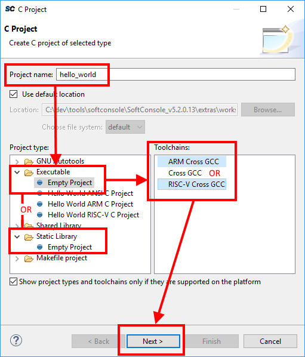
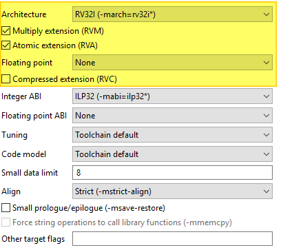
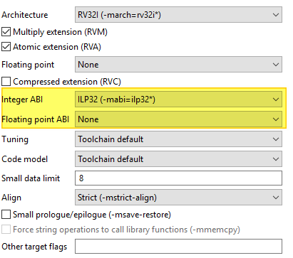
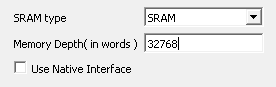
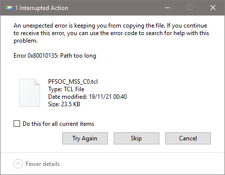

Projects¶
Creating a new project¶
Depending on the type of project required select:
![digraph { graph [rankdir="LR", ranksep=.01, bgcolor=transparent]; node [fontname="Verdana", style=filled, fillcolor=white, fontsize="9", shape="rectangle", width=.1, height=.2, margin=".04,.01"]; edge [arrowsize=.7]; "SoftConsole Menu toolbar" -> "File" -> "New" -> "'C Project' or 'C++ Project'"; }](../_images/graphviz-b2ac91da8acb2b55f5d446a1c6590490cce9293f.png)
In the C/C++ Project page of the wizard enter the Project name, select
Select the appropriate toolchain.
For a Cortex-M project select Toolchains = Arm Cross GCC.
For a RISC-V project select Toolchains = RISC-V Cross GCC.
Click
Nextto go to the next wizard page, Select Configurations: The Select Configurations page of the wizard allows the configurations or build targets that the project will support to be configured. By default, two configurations are created – Debug and Release. Should other configurations be required these can be created using the Advanced settings… button which launches the project Properties dialog in which additional configurations can be specified or properties for any or all configurations can be changed. Normally the default Debug and Release configurations are sufficient. When finished click the
Nextbutton to go to the next wizard page,GNU Arm Cross ToolchainorGNU RISC-V Cross Toolchain.The GNU Arm Cross Toolchain or GNU RISC-V Cross Toolchain wizard page specifies the name and path of the toolchain to be used to build the project. These should be correct by default but double check that the values are as follows:
Toolchain name = RISC-V GCC/Newlib (riscv64-unknown-elf-gcc)
Toolchain path = ${eclipse_home}/../riscv-unknown-elf-gcc/bin
Toolchain name = GNU Tools for Arm Embedded Processors (arm-none-eabi-gcc)
Toolchain path = ${eclipse_home}/../arm-none-eabi-gcc/bin
Click
Finishto complete the creation of the new project.
Project Settings¶
Most of the project settings default to usable values. However, some project settings must be modified manually depending on the target device/CPU. Use the example projects as a guide to creating new project while bearing in mind that these are just simple functional examples and a real application may benefit from the use of some of the many other configuration options and command line options that the underlying GCC tools support.
To modify the project settings right click on the project in the Project Explorer and select Properties from the context menu. Then navigate to:
Select Configuration = All configurations to configure settings applicable to all build targets (by default Debug and
Release) or else select a specific configuration (e.g. Configuration = Debug or Configuration = Release) to configure
settings applicable only to that build target.
Except where noted the settings below can be configured for all [All Configurations].
All CPU targets¶
Target Processor¶
The characteristics of the target CPU are configured in the:
For Cortex-M projects these will default to Arm Family = cortex-m3 which is correct for SmartFusion2 and SmartFusion2. For Cortex-M1 projects this should be changed to cortex-m1.
For RISC-V projects the settings must be configured to match the target CPU characteristics so that the underlying
compiler tools are passed the correct -march=<arch> and -mabi=<abi> options, code is generated in line with
the supported and used extensions and the appropriate multilibs are linked. Note that the RISC-V toolchain defaults
to targeting rv64gc which may not be appropriate for all RISC-V target designs. Architecture and ABI settings affect all platforms, but it’s very important with RISC-V because of all the possible extensions and their possible combinations.
The main options of relevance here are:
Architecture: specifies the base architecture – e.g. RV32* for Mi-V 32-bit soft cores or RV64* for PolarFire SoC 64- bit multi-processor
Multiply extension (RVM): check if the target supports the M (hardware multiply/divide) extension
Atomic extension (RVA): check if the target supports the A extension
Floating point: specifies what hardware floating point extension the target supports
Compressed extension (RVC): check if the target supports the C extension
Integer ABI: specifies the integer ABI to be used – usually set to LP32 (
-mabi=ilp32) for Mi-V or LP64 (-mabi=lp64) for PolarFire SoCFloating point ABI: specifies the floating-point ABI to be used
Code model: specifies the code model to be used
Align: specifies the alignment policy – should be set to Strict (
-mstrict-align) to avoid unaligned memory access exceptions when using the Microsemi (Mi-V) RISC-V Hardware Abstraction Layer (HAL) or PolarFire SoC PSE_HAL and-Osto optimize the program for size
Architecture¶
Architecture is configured with the following settings, it describes what the target HW is capable of:

ABI¶
ABI describes how many and what registers are used and available on the target, which ones are used to pass variable arguments to functions, which one are return variables. Which registers get saved by callee and which one by caller. The ABI can’t use more than the HW is capable of. ABI can be configured with following:

For more information see the SiFive’s blog: https://www.sifive.com/blog/all-aboard-part-1-compiler-args
Multilibs¶
Are build for specific combinations of Architecture and ABI. Because these increase the size of the toolchain, not every combination is supported. Currently supported combinations are:
| march | mabi |
|---|---|
| rv32i | ilp32 |
| rv32ia | ilp32 |
| rv32iac | ilp32 |
| rv32iaf | ilp32f |
| rv32iafc | ilp32f |
| rv32ic | ilp32 |
| rv32if | ilp32f |
| rv32ifc | ilp32f |
| rv32im | ilp32 |
| rv32ima | ilp32 |
| rv32imac | ilp32 |
| rv32imaf | ilp32f |
| rv32imafc | ilp32f |
| rv32imc | ilp32 |
| rv32imf | ilp32f |
| rv32imfc | ilp32f |
| rv64i | lp64 |
| rv64ia | lp64 |
| rv64iac | lp64 |
| rv64iaf | lp64f |
| rv64iafc | lp64f |
| rv64iafd | lp64d |
| rv64iafdc | lp64d |
| rv64ic | lp64 |
| rv64if | lp64f |
| rv64ifc | lp64f |
| rv64ifd | lp64d |
| rv64ifdc | lp64d |
| rv64im | lp64 |
| rv64ima | lp64 |
| rv64imac | lp64 |
| rv64imaf | lp64f |
| rv64imafc | lp64f |
| rv64imafd | lp64d |
| rv64imafdc | lp64d |
| rv64imc | lp64 |
| rv64imf | lp64f |
| rv64imfc | lp64f |
| rv64imfd | lp64d |
| rv64imfdc | lp64d |
Note
Be specific. Avoid using
Toolchain defaultsettings which will revert to RV64GC and on RV32 targets will give obscure errors.Double check if your combincation of Architecture/ABI is supported, if not it will revert to the default (RV64GC) and cause problems.
SoftConsole supports only native ABIs,
RV64IMAFDarchitecture is supporting only the ABI which contains theDextension. However it is possible to change the architecture toRV64IMAFand then theFABI will work. If it’s needed to use some subset of ABI, change the Architecture first. It’s OK to compile for less capable Architecture
Linker Script¶
It is essential that the appropriate linker script is configured for the project. This will often be one of the example linker scripts bundled with the relevant CMSIS/HAL firmware core which has been generated and imported/copied into the project.
![digraph {
graph [rankdir="LR", ranksep=.01, bgcolor=transparent];
node [fontname="Verdana", fontsize="9", shape="rectangle", width=.1, height=.2, margin=".04,.01", style=filled, fillcolor=white];
edge [arrowsize=.7];
"Project Properties" -> "C/C++ Build" -> "Settings" -> "Tool Settings" -> "GNU RISC-V Cross C/C++ Linker" -> "General"
}](../_images/graphviz-15637dc4124400098b704823a91b356241d9b0c6.png)
![digraph {
graph [rankdir="LR", ranksep=.01, bgcolor=transparent];
node [fontname="Verdana", fontsize="9", shape="rectangle", width=.1, height=.2, margin=".04,.01", style=filled, fillcolor=white];
edge [arrowsize=.7];
"Project Properties" -> "C/C++ Build" -> "Settings" -> "Tool Settings" -> "Cross Arm GNU C/C++ Linker" -> "General"
}](../_images/graphviz-32e4a0b531fc4418085be3b0318b06089dc91782.png)
Then:
and enter the linker script name into the Add file path dialog – e.g.:
Please refer to the PolarFire SoC PSE_HAL documentation and PolarFire SoC/PSE example project(s) bundled with SoftConsole for guidance on how to configure this option.
${workspace_loc:/${ProjName}/riscv_hal/microsemi-riscv-ram.ld}
${workspace_loc:/${ProjName}/CMSIS/startup_gcc/debug-in-microsemismartfusion2-esram.ld}
${workspace_loc:/${ProjName}/CMSIS/startup_gcc/debug-in-actel-smartfusionenvm.ld}
${workspace_loc:/${ProjName}/blinky_linker_config.ld}
Note
Refer to the relevant CMSIS/HAL documentation for more information about what example linker scripts are available and the circumstances in which they are used.
CMSIS/HAL bundled linker scripts are just examples that can usually be used as-is in simple cases but should generally be adapted as required to match the requirements of a specific target/application.
In some cases, different configurations/build targets will use different linker scripts.
Newlib-Nano¶
newlib is the standard library bundled with SoftConsole and it is optimized for use in resource/memory constrained
bare metal embedded firmware environments. newlib also comes with a “nano” version which is even smaller at the
cost of omitting some functionality which may be rarely used in such environments (e.g. the full range of *printf
formatting options etc.). In many cases it makes sense to use newlib-nano and only switch to the full blown newlib if
necessary because using newlib-nano can significantly reduce the compiled and linked programs which use
standard library features.
To use newlib-nano check the following option:
![digraph {
graph [rankdir="LR", ranksep=.01, bgcolor=transparent];
node [fontname="Verdana", fontsize="9", shape="rectangle", width=.1, height=.2, margin=".04,.01", style=filled, fillcolor=white];
edge [arrowsize=.7];
"Project Properties" -> "C/C++ Build" -> "Settings" -> "Tool Settings" -> "GNU RISC-V Cross C/C++ Linker" -> "Miscellaneous" -> "Use newlib-nano (--specs=nano.specs)"
}](../_images/graphviz-2dde41363230a5e8f1edd13967d1a5e2a6272b90.png)
![digraph {
graph [rankdir="LR", ranksep=.01, bgcolor=transparent];
node [fontname="Verdana", fontsize="9", shape="rectangle", width=.1, height=.2, margin=".04,.01", style=filled, fillcolor=white];
edge [arrowsize=.7];
"Project Properties" -> "C/C++ Build" -> "Settings" -> "Tool Settings" -> "Cross Arm GNU C/C++ Linker" -> "Miscellaneous" -> "Use newlib-nano (--specs=nano.specs)"
}](../_images/graphviz-eb42eaeb1e9a06173659c2d3ab227e614dd010d6.png)
Create Extended Listing¶
An extended listing file (e.g. Debug/
Preprocessor Defines and Includes¶
If any preprocessor defines/symbols or includes are needed, then they can be specified under:
![digraph {
graph [rankdir="LR", ranksep=.01, bgcolor=transparent];
node [fontname="Verdana", fontsize="9", shape="rectangle", width=.1, height=.2, margin=".04,.01", style=filled, fillcolor=white];
edge [arrowsize=.7];
"Project Properties" -> "C/C++ Build" -> "Settings" -> "Tool Settings" -> "GNU RISC-V Cross C/C++ Compiler" -> "Preprocessor" -> "Defined symbols (-D)"
}](../_images/graphviz-796d9db065e7e11a252e86cd8dc92acec3061f94.png)
![digraph {
graph [rankdir="LR", ranksep=.01, bgcolor=transparent];
node [fontname="Verdana", fontsize="9", shape="rectangle", width=.1, height=.2, margin=".04,.01", style=filled, fillcolor=white];
edge [arrowsize=.7];
"Project Properties" -> "C/C++ Build" -> "Settings" -> "Tool Settings" -> "GNU RISC-V Cross C/C++ Compiler" -> "Include paths (-I) or Include files (-include)"
}](../_images/graphviz-81ba498db370e6366f32060c69350b3c6ac62e67.png)
![digraph {
graph [rankdir="LR", ranksep=.01, bgcolor=transparent];
node [fontname="Verdana", fontsize="9", shape="rectangle", width=.1, height=.2, margin=".04,.01", style=filled, fillcolor=white];
edge [arrowsize=.7];
"Project Properties" -> "C/C++ Build" -> "Settings" -> "Tool Settings" -> "Cross Arm GNU C/C++ Compiler" -> "Preprocessor" -> "Defined symbols (-D)"
}](../_images/graphviz-6e53e38bec8d2dfe92529c60bbe7bd6bdd8f2bda.png)
![digraph {
graph [rankdir="LR", ranksep=.01, bgcolor=transparent];
node [fontname="Verdana", fontsize="9", shape="rectangle", width=.1, height=.2, margin=".04,.01", style=filled, fillcolor=white];
edge [arrowsize=.7];
"Project Properties" -> "C/C++ Build" -> "Settings" -> "Tool Settings" -> "Cross Arm GNU C/C++ Compiler" -> "Include paths (-I) or Include files (-include)"
}](../_images/graphviz-ef55d1857e9d508160790ef901b28e3e053ae680.png)
Depending on the target CPU and CMSIS/HAL used additional CMSIS/HAL related include paths may be required. Refer to the relevant CMSIS/HAL documentation for more information.
Optimization Options¶
Most optimization options can be set at the project top level under Tool Settings > Optimization.
Other optimization settings, including Language standard (which defaults to GNU ISO C11 (-std=gnu11) or GNU
ISO 2011 C++ (-std=gnu++11), can be specified under
![digraph {
graph [rankdir="LR", ranksep=.01, bgcolor=transparent];
node [fontname="Verdana", fontsize="9", shape="rectangle", width=.1, height=.2, margin=".04,.01", style=filled, fillcolor=white];
edge [arrowsize=.7];
"Project Properties" -> "C/C++ Build" -> "Settings" -> "Tool Settings" -> "GNU RISC-V Cross C/C++ Compiler" -> "Optimization"
}](../_images/graphviz-26732c9e0526e65b51e9a62097005bc227448749.png)
![digraph {
graph [rankdir="LR", ranksep=.01, bgcolor=transparent];
node [fontname="Verdana", fontsize="9", shape="rectangle", width=.1, height=.2, margin=".04,.01", style=filled, fillcolor=white];
edge [arrowsize=.7];
"Project Properties" -> "C/C++ Build" -> "Settings" -> "Tool Settings" -> "Cross Arm GNU C/C++ Compiler" -> "Optimization"
}](../_images/graphviz-164cce9fe0e2176b4dbd804f27b3dc682e05ff94.png)
“Fine grained” linking using -fdata-sections -ffunction-sections and -gc-sections is enabled by default here and under
![digraph {
graph [rankdir="LR", ranksep=.01, bgcolor=transparent];
node [fontname="Verdana", fontsize="9", shape="rectangle", width=.1, height=.2, margin=".04,.01", style=filled, fillcolor=white];
edge [arrowsize=.7];
"Project Properties" -> "C/C++ Build" -> "Settings" -> "Tool Settings" -> "GNU RISC-V Cross C/C++ Linker" -> "General" -> "Remove unused sections (-Xlinker --gc-sections)"
}](../_images/graphviz-749d8a27965b85fb1d00c13a1dc89e804c887905.png)
![digraph {
graph [rankdir="LR", ranksep=.01, bgcolor=transparent];
node [fontname="Verdana", fontsize="9", shape="rectangle", width=.1, height=.2, margin=".04,.01", style=filled, fillcolor=white];
edge [arrowsize=.7];
"Project Properties" -> "C/C++ Build" -> "Settings" -> "Tool Settings" -> "Cross Arm GNU C/C++ Linker" -> "General" -> "Remove unused sections (-Xlinker --gc-sections)"
}](../_images/graphviz-26df8f4bac916c54c45a69251d17f70c7f60fcae.png)
Library Dependencies¶
Where an application project depends on a static library project this dependency can be configured in the application project’s properties so that building the application will ensure that the static library project is also built and up to date if necessary.
Note
For this to work the same configuration/build target (e.g. Debug or Release) must be selected for both projects: e.g.
![digraph {
graph [rankdir="LR", ranksep=.01, bgcolor=transparent];
node [fontname="Verdana", fontsize="9", shape="rectangle", width=.1, height=.2, margin=".04,.01", style=filled, fillcolor=white];
edge [arrowsize=.7];
"Right click on \<YOUR_PROJECT\> in the Project Explorer" -> "Build Configurations" -> "Set Active" -> "select the required configuration"
}](../_images/graphviz-3a333bcc61155c99dca14dc17a075c4ac5fc98f8.png)
To configure such an application/library project dependency right click on the application project in Project Explorer and from the context menu select Properties then Project References and check the library project(s) on which the application project depends.
Print Size¶
By default, the Print Size build step is configured to output size information in “Berkeley” format. The alternative, “SysV” format is often more informative and useful. To change this option right click on the project in Project Explorer and from the context menu select
![digraph {
graph [rankdir="LR", ranksep=.01, bgcolor=transparent];
node [fontname="Verdana", fontsize="9", shape="rectangle", width=.1, height=.2, margin=".04,.01", style=filled, fillcolor=white];
edge [arrowsize=.7];
"Project Properties" -> "C/C++ Build" -> "Settings" -> "Tool Settings" -> "GNU RISC-V Cross Print Size" -> "General"
}](../_images/graphviz-21587c1825edc5b65b9e38de63825f11ed305b86.png)
![digraph {
graph [rankdir="LR", ranksep=.01, bgcolor=transparent];
node [fontname="Verdana", fontsize="9", shape="rectangle", width=.1, height=.2, margin=".04,.01", style=filled, fillcolor=white];
edge [arrowsize=.7];
"Project Properties" -> "C/C++ Build" -> "Settings" -> "Tool Settings" -> "Cross Arm GNU Print Size" -> "General"
}](../_images/graphviz-b298ac1357ba9478346e2ad687a24c89bdf00fc1.png)
and select Size format = SysV instead of Berkeley.
Other Options¶
There are many other options that can be set if needed. Explore the SoftConsole project properties dialog and refer to the relevant GNU/GCC tool documentation for more information on these.
Specifying Options for All Build Configurations¶
Some project settings can be set once for all configurations/build targets (e.g. Debug and Release). To do this select Configuration = [ All Configurations] before specifying the relevant options and applying/saving them.
RISC-V targets¶
Do not use standard start files (-nostartfiles)¶
For RISC-V targets this option must be checked when using the Microsemi Mi-V RISC-V HAL (Hardware Abstraction Layer) to avoid link errors:
![digraph {
graph [rankdir="LR", ranksep=.01, bgcolor=transparent];
node [fontname="Verdana", fontsize="9", shape="rectangle", width=.1, height=.2, margin=".04,.01", style=filled, fillcolor=white];
edge [arrowsize=.7];
"Project Properties" -> "C/C++ Build" -> "Settings" -> "Tool Settings" -> "GNU RISC-V Cross C/C++ Linker" -> "Do not use
standard start files (-nostartfiles)"
}](../_images/graphviz-6f9e1ee02172c67c6322fc3e684ce88a5bc9f931.png)
Use strict alignment¶
Generally, and particularly when using the Microsemi RISC-V Hardware Abstraction Layer (HAL) strict alignment
should be used to avoid unaligned memory access trap exceptions (mcause = 4 or 6) when the program is
optimized for size using -Os:
Cortex-M targets¶
CMSIS¶
Cortex-M projects require an additional setting for the preprocessor to find the toolchain CMSIS header files
otherwise compilation will fail to find certain CMSIS header files. Set --specs=cmsis.specs to the:
![digraph {
graph [rankdir="LR", ranksep=.01, bgcolor=transparent];
node [fontname="Verdana", fontsize="9", shape="rectangle", width=.1, height=.2, margin=".04,.01", style=filled, fillcolor=white];
edge [arrowsize=.7];
"Project Properties" -> "C/C++ Build" -> "Settings" -> "Tool Settings" -> "Cross Arm GNU C/C++ Compiler" -> "Miscellaneous" -> "Other compiler flags"
}](../_images/graphviz-afa3319c4db7e8b29bbf24e07eec0773644ee08f.png)
From SoftConsole v5.3 onwards the softconsole.cmd (Windows) or softconsole.sh (Linux) script used to
run SoftConsole configures the SC_INSTALL_DIR environment variable which is then referenced in the
<SoftConsole-install-dir>/arm-none-eabi-gcc/arm-none-eabi/lib/cmsis.specs file. If
SoftConsole is not run from the script (usually via a menu/desktop shortcut) or the Arm GCC tools are run from the
command line or a Makefile then the SC_INSTALL_DIR environment variable will need to
Considerations around Libero designs¶
For demonstration a RISC-V and SmartFusion2 Cortex-M3 projects were chosen, however similar steps can be applied to all other targets and other types of memories.
Deploying Release HEX files for production¶
Libero’s restricted memory view of the Data Storage clients expects applications based from 0x00000000 offset. While SoftConsole produces HEX files based at offsets where the application will be running as typically the HEX files are used for deployment/debugging from the debugger. Larger starting offsets are confusing Data Storage clients in Libeo and produce errors like if the application is too large:
@E : IHX006 : Intel Hex Address record error.
Address extension specified is more than the configuration of eNVM : "<HEX_FILE>.hex" : 1
Or similar errors such as (depending what block is used):
@E : IHX006 : Intel Hex Address record error.
Address extension specified is more than the configuration of PF_uPROM : "<HEX_FILE>.hex" : 1
To solve the problem the HEX file has to be “normalized” to the 0x00000000 offset. This can be achieved by adding an additional flag into the SoftConsole’s Project Properties which will subtract the application base offset and achieves a 0x00000000 HEX file base offset. How much has to be subtracted depends on the application’s base address, which depends on used linker script. This mean that this solution has to be adjusted depending what linker script is used.
Production deployment of RISC-V targets need to use a dedicated (and correct) deploy linker script. With polarfire-soc-bare-metal-library examples investigate the following
/src/platform/config/linker folder.
Note
Depending on the linker script the following snippet change-section-lma *-0x80000000 might need to be adjusted before it’s copy/pasted to correctly match the base address offset of the linker script.
Inside your project do the following:
![digraph {
graph [rankdir="LR", ranksep=.01, bgcolor=transparent];
node [fontname="Verdana", fontsize="9", shape="rectangle", width=.1, height=.2, margin=".04,.01", style=filled, fillcolor=white];
edge [arrowsize=.7];
"Project Properties" -> "C/C++ Build" -> "Settings" -> "Tool Settings" -> "GNU RISC-V Cross Create Flash Image" -> "General" -> "Other flags enter"
}](../_images/graphviz-a38429bd948dbe08bf559c9154f4ab687b6bb492.png)
And copy this section:
--change-section-lma *-0x80000000
For a SmartFusion2 Cortex-M3 program linked using the SmartFusion2 CMSIS Hardware Abstraction Layer example
linker script production-smartfusion2-relocate-to-external-ram.ld some additional settings must be
specified.
When this linker script is used the hex (Intel HEX or Motorola S-record) file generated by SoftConsole is normally
used as the input file to a Libero SoC eNVM Data Storage client which is used to program the production firmware
into eNVM.
If the following project settings are not configured then the eNVM Data Storage client will reject the hex file as invalid.
Inside your project do the following:
![digraph {
graph [rankdir="LR", ranksep=.01, bgcolor=transparent];
node [fontname="Verdana", fontsize="9", shape="rectangle", width=.1, height=.2, margin=".04,.01", style=filled, fillcolor=white];
edge [arrowsize=.7];
"Project Properties" -> "C/C++ Build" -> "Settings" -> "Tool Settings" -> "Cross Arm GNU Create Flash Image" -> "General" -> "Other flags enter"
}](../_images/graphviz-02b2b97d811cd424f446ec56d817020fc5e1d129.png)
And copy this section:
--change-section-lma *-0x60000000
This has the effect of normalizing addresses in the Cortex-M3 memory map view of eNVM (based at 0x60000000)
to the more restricted eNVM Data Storage client view of memory in the Libero which only sees eNVM based at 0x00000000.
Warning
This example works only for linker script linking at address eNVM address 0x60000000. If using different linker scripts, then the --change-section-lma *-0x60000000 has to be changed to match the linker script address before it’s copied into the SoftConsole.
Note
This is the authoritative solution for the production deployment! If other (possibly legacy) Microsemi/Microchip documents are referencing to this problem and are recommending to delete the first line of the HEX file then this solution is superseding it!
Generic information on objcopy and normalization¶
For more on this and other objcopy options see here: https://sourceware.org/binutils/docs/binutils/objcopy.html.
Previously some users deleted the first line of the HEX file, even it might seem like a working solution, but it’s flawed on multiple
levels and is strongly not recommended nor supported. There is a high risk of the data getting malformed and causing various
other issues in the deployment. Making new launcher “Deploy” and adding this as the permanent flag will allow users to regenerate the file as frequently as they need without a need of any extra manual steps (and not modify the data beyond the tool’s
back). And because the Intel HEX format is based on 16-bit blocks, the bigger applications will not work at all with the ‘delete
the first line’ workaround (especially the error around the line 4097). This might falsely indicate that there is something wrong
with the application, code or the compilation settings/features or something wrong between Debug/Release configurations
because with different code/settings/configuration the issue is not observed, however it still might be caused by not “normalizing”
the file properly.
The error messages differ depending on what core/memory the hex file is getting stored into. For example, the error from PF_SRAM_AHBL_AXI module might be different than error from PF_uPROM or eNVM module, however all might be pointing to the same issue. Here is a list (not extensive) of some error messages which might be related to this issue:
Error: Invalid Memory File Content: Errors encountered while parsing the Memory file.
IHX006: Intel Hex Address record error. Address extension specified in the record is more than the maximum possible address
for the destination, when reading file “<YOUR_HEX>” at line 1.
IHX006: Intel Hex Address record error. Address extension specified in the record is more than the maximum possible address
for the destination, when reading file “<YOUR_HEX>” at line 4097.
Libero’s word is 16-bit¶
There might be other independent but overlapping issues which make it harder for the users to debug this issue. Very common and easy to make mistake is having the physical memory smaller than the application requirements, make sure the memory is sized properly. The meaning of “word” in Libero design might not mean what users could expect and might not correlate with the Data Width settings, users should verify its meaning with the core’s documentation. It’s possible to set the SRAM block to 64KiB size (word meaning 16-bits no matter what is the Data Bus Width) while users expecting it to be 128KiB size:

Adding source files to a project¶
Once the project has been created the required source files should be added.
In most cases the best way to do this is to use Libero SoC to select the relevant firmware cores (including CMSIS/HAL, SmartFusion/SmartFusion2 MSS peripheral drivers, DirectCore drivers etc.), generate these, export the firmware files and then import or copy them into the SoftConsole project.
In fact, for SmartFusion and SmartFusion2 is it essential that at least the drivers_config folder is generated
by/exported from Libero SoC and imported/copied into the SoftConsole project every time that the hardware project
is changed. This is because the files in this folder contain information about the target platform that is essential to
the correct functioning on firmware on that hardware platform.
It is also possible to generate specific firmware cores/drivers from the Firmware Catalog and then import/copy them into the SoftConsole project.
Refer to the Libero SoC and Firmware Catalog tools and documentation for more information on generating/exporting firmware cores from these tools.
Warning
Remember that any SoftConsole v3.4 workspaces or projects or SoftConsole v5.1 RISC-V projects generated by Libero SoC or the Firmware Catalog cannot be used with SoftConsole v5.2 or later.
When importing/copying firmware files generated by/exported from Libero SoC or the Firmware Catalog it is safest to first manually delete all relevant folders from the SoftConsole project (e.g. CMSIS, hal, pse_hal, drivers, drivers_config) and retain only the custom source files created for the project itself.
Firmware folders/files can be copied by dragging and dropping from a file manager on Windows or Linux or by using the SoftConsole import facility:
![digraph {
graph [rankdir="LR", ranksep=.01, bgcolor=transparent];
node [fontname="Verdana", fontsize="9", shape="rectangle", width=.1, height=.2, margin=".04,.01", style=filled, fillcolor=white];
edge [arrowsize=.7];
"Right click on the project in the Project Explorer" -> "Import" -> "General" -> "File System" -> "click 'Next'" -> "Browse"
}](../_images/graphviz-d09d901e916b248814ef9586c316f2e7d30abd31.png)
And select the directory from which the firmware files are to be imported (e.g. the firmware directory below a Libero SoC project directory), select the required folders/files and click Finish to import the files.
Building a project¶
Once a project has been correctly configured and populated with the required firmware it can be built. The quickest way to build a project is to click the ‘Hammer’ icon in the SoftConsole menu toolbar.
Typical build configurations are Debug and Release, but projects can have many other configurations.
Note
There is big difference between the Debug configuration to build unoptimized binary and the Debug launcher to be debugging whatever the active configuration is. It’s the difference between noun and verb.
It is possible:
To be Debugging your Debug configuraion
To be Running your Debug configuration
To be Debugging your Release configuraion
To be Running your Release configuration
All combinations have valid use cases. It’s upto the users and their projects, but typically the Debug configuration has no optimalizations enabled, is linked to SRAM, can have some #defines enabled to increase verbosity of the logging features, possibly enabling some other helper features which are not required for production.
While the Release configuration can be seen as production release, linked to eNVM, enabled size/speed optimalizations and disabled all non-production features.
However there is still need to sometimes just to Run the Debug configuraion (no need to change how it’s linked/oprimised), but no need to break at main and other breakpoints.
Other case is that sometimes a edge-case bug is happening and the optimised Release build has to be Debugged, which makes stepping thorugh the code not as straight forward as non-optimized variant.
Therefore the Debug build configuration and Debug launchers have to be considered as two separate concepts, which they are.
With the project still selected in the:
Project Explorer select Project > Build Project. The results of the build process can be viewed in the Console view and the Problems view if there are any problems (e.g. errors or warnings)
Long paths on Windows¶
The MAX_PATH inside Windows file I/O API is restricted to 260 characters, but the usable path is even more constrained. The MAX_PATH must contain the drive letter and the NULL character to terminate the string correctly:
Effectively this shrinks the limit of the usable path to 256 characters for files. While the limit for directories is 244 (256-12) because they need to be capable to append DOS style filename 8.3 at the end of the path.
Users are encouraged to place the projects at the shortest feasible paths because not just the root of the project is important, but its PROJECT_NAME and its CONFIGURATION as well. For example if the WORKSPACE_PATH is short, then still there is possibility to create long path when addressing the ELF file. On top of the project’s root, the current CONFIGURATION impacts the path and the PROJECT_NAME impacts it twice:
<WORKSPACE_PATH>/<PROJECT_NAME>/<CONFIGURATION>/<PROJECT_NAME>.elf
Using reasonable project names, concise configuration names and placing project’s root at short paths can avoid this problem.
Warning
Big projects (such as polarfire-soc-bare-metal-examples) that contain large structures with long paths should be copied/cloned/extracted to a shallow path. Safest is to use a plain root folder to make sure the long path issue was not triggered. Then importing the project into a workspace within a shallow path is necessary as well.
When building a project and receiving the following error might indicate that the long-path issue was triggered:
15:59:40 **** Build of configuration LIM-Debug for project mpfs-mac-simple-test-multi-emac ****
make all
make: *** INTERNAL: readdir: No such file or directory. Stop.
"make all" terminated with exit code 2. Build might be incomplete.
15:59:41 Build Failed. 1 errors, 0 warnings. (took 1s.229ms)
Note
Providing SotftConsole with a corrupted project will cause all sorts of problems and it will not compile the project properly. One way to avoid corruption of a project is to NOT ignore any previous errors before the project is imported.
For example if extracing ZIP of a project into a long path can corrupt the project in the process:

Resolve all problems first and only then import the project into SoftConsole.